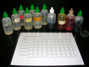
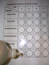
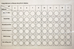
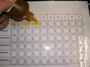
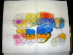

Purpose
You will demonstrate the use of indicators as a means to
determine the pH of a solution. |
|
Science Skills |
Performing and Recording
Analyzing and Interpreting |
|
Materials
The following materials are shown in the photographs of this virtual investigation:
- 2 copies of the handout "Determining pH Using Indicators"
- 1 letter-size overhead transparency sheet
- masking tape
- dropper bottles (or eyedroppers)
- solutions with pHs of 1, 3, 5, 7, 9, 11, and 13
- pH indicators
– alizarin yellow R
– thymol blue
– bromothymol blue
– bromocresol green
– methyl orange
- water containing juice extracted from red cabbage
when boiled
- unknown solutions A, B, and C
Click on photos to enlarge.
|
CAUTION! |
| Use gloves, safety glasses,
and a lab apron for this activity. |
Procedure
| step 1: |
Place one of the handouts on the surface of
your work area. Cover the handout with the
transparency sheet. Use masking tape to ensure
the sheet lays flat and remains attached to
the surface of your work area throughout the
experiment.

|
| step 2: |
Place one drop of the solution labelled "pH 1"
into each circle in its designated column on the
transparency, which is overtop the handout.

|
| step 3: |
Repeat step 2 with the other pH solutions and
the unknown solutions.

|
| step 4: |
Carefully add a drop of alizarin yellow R indicator
to the circles in the first row of the handout.
When adding the indicator, ensure that the end
of the bottle does not touch the drop of solution
already in the circle.

|
| step 5: |
Repeat step 4 using the other indicators listed in
the handout.
|
| step 6: |
Record the colour of the resulting mixture within
each circle in a data table.
|
| step 7: |
Use paper towel to absorb most of the solutions
on the transparency; then rinse the transparency
in the sink.

|
| step 8: |
Return all apparatus to its proper location in
the lab. |
Observations
- Show your results of this investigation.
Analysis
- Use the data to estimate the pH of solutions A, B,
and C. Explain how you arrived at your estimation.
State a reason why using indicators only results in an
estimation of the pH of the three solutions.
|